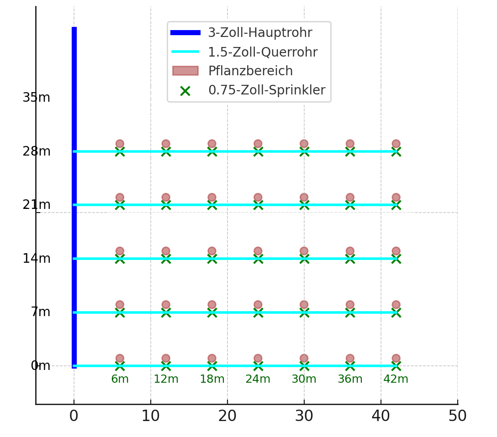

<div class="content">
    <div class="container mt-3">
        <h1 class="text-center text-info" data-de="Installation des Bewässerungssystems" data-th="การติดตั้งระบบชลประทาน">
            Anleitung zur Installation des Bewässerungssystems
        </h1>

        <div class="text-center mt-4">
            
        </div>

        <section class="mt-4">
            <h2 class="text-secondary" data-de="1. Vorbereitung der Gräben" data-th="1. การเตรียมคูน้ำ">
                1. Vorbereitung der Gräben
            </h2>
            <ul>
                <li data-de="Ein Graben für das 3-Zoll-Hauptrohr entlang der Länge des Feldes." data-th="ร่องสำหรับท่อหลักขนาด 3 นิ้วตามความยาวของแปลงเกษตร.">
                    Ein Graben für das 3-Zoll-Hauptrohr entlang der Länge des Feldes. 
                </li>
                <li data-de="Querverlaufende Gräben für die 1,5-Zoll-Rohre alle 7 Meter." data-th="ร่องขวางสำหรับท่อขนาด 1.5 นิ้ว ทุกๆ 7 เมตร.">
                    Querverlaufende Gräben für die 1,5-Zoll-Rohre, alle 7 Meter.
                </li>
                <li data-de="Tiefe der Gräben: Mindestens 30-50 cm, um die Rohre vor Schäden durch landwirtschaftliche Maschinen zu schützen." data-th="ความลึกของคูน้ำ: อย่างน้อย 30-50 ซม. เพื่อป้องกันท่อจากความเสียหายโดยเครื่องจักรทางการเกษตร.">
                    Tiefe der Gräben: Mindestens 30-50 cm, um die Rohre vor Schäden durch landwirtschaftliche Maschinen zu schützen.
                </li>
                <li data-de="Plane etwa 1 Stunde pro Reihe ein, abhängig von der Bodenbeschaffenheit und der Teamgrösse." data-th="วางแผนใช้เวลาประมาณ 1 ชั่วโมงต่อแถว ขึ้นอยู่กับลักษณะดินและขนาดทีม.">
                    Plane etwa 1 Stunde pro Reihe ein, abhängig von der Bodenbeschaffenheit und der Teamgrösse.
                </li>
            </ul>
        </section>

        <section class="mt-4">
            <h2 class="text-secondary" data-de="2. Installation Hauptleitung (3-Zoll-Rohr)" data-th="2. การติดตั้งท่อหลัก (ท่อ 3 นิ้ว)">
                2. Installation der Hauptleitung (3-Zoll-Rohr)
            </h2>
            <ul>
                <li data-de="Positioniere das 3-Zoll-Rohr entlang der linken Feldseite." data-th="วางท่อขนาด 3 นิ้วตามด้านซ้ายของทุ่ง.">
                    Positioniere das 3-Zoll-Rohr entlang der linken Feldseite.
                </li>
                <li data-de="Verbinde die Rohrsegmente mit passenden Kupplungen. Nutze Teflonband für dichte Verbindungen." data-th="เชื่อมต่อส่วนของท่อด้วยข้อต่อที่เหมาะสม ใช้เทปเทฟลอนเพื่อการเชื่อมต่อที่แน่นหนา.">
                    Verbinde die Rohrsegmente mit passenden Kupplungen. Nutze Teflonband für dichte Verbindungen.
                </li>
                <li data-de="Setze T-Stücke alle 7 Meter ein, um die Querrohre (1,5-Zoll-Rohre) anzuschliessen." data-th="ติดตั้งข้อต่อ T ทุก 7 เมตร เพื่อเชื่อมต่อท่อขวาง (ท่อขนาด 1.5 นิ้ว).">
                    Setze T-Stücke alle 7 Meter ein, um die Querrohre (1,5-Zoll-Rohre) anzuschliessen.
                </li>
            </ul>
        </section>

        <section class="mt-4">
            <h2 class="text-secondary" data-de="3. Installation Querrohre (1,5-Zoll-Rohre)" data-th="3. การติดตั้งท่อขวาง (ท่อ 1.5 นิ้ว)">
                3. Installation der Querrohre (1,5-Zoll-Rohre)
            </h2>
            <ul>
                <li data-de="Verbinde jedes Querrohr mit den T-Stücken der Hauptleitung." data-th="เชื่อมต่อท่อขวางแต่ละท่อกับข้อต่อ T ของท่อหลัก.">
                    Verbinde jedes Querrohr mit den T-Stücken der Hauptleitung.
                </li>
                <li data-de="Verlege die 1,5-Zoll-Rohre quer über die Breite des Feldes (42 Meter)." data-th="วางท่อขนาด 1.5 นิ้ว ขวางความกว้างของทุ่ง (42 เมตร).">
                    Verlege die 1,5-Zoll-Rohre quer über die Breite des Feldes (42 Meter).
                </li>
                <li data-de="Befestige die Endstücke, um einen Druckverlust zu vermeiden." data-th="ติดตั้งฝาท้ายเพื่อป้องกันการสูญเสียแรงดัน.">
                    Befestige die Endstücke, um einen Druckverlust zu vermeiden.
                </li>
            </ul>
        </section>

        <section class="mt-4">
            <h2 class="text-secondary" data-de="4. Installation Sprinklerrohre (0,75-Zoll-Rohre) und Sprinklerköpfe" data-th="4. การติดตั้งท่อฉีดน้ำ (ท่อขนาด 0.75 นิ้ว) และหัวฉีดน้ำ">
                4. Installation der Sprinklerrohre (0,75-Zoll-Rohre) und Sprinklerköpfe
            </h2>
            <ul>
                <li data-de="Verbinde jedes Sprinklerrohr mit den T-Stücken am Querrohr." data-th="เชื่อมต่อท่อฉีดน้ำแต่ละเส้นกับข้อต่อ T ที่อยู่บนท่อขวาง.">
                    Verbinde jedes Sprinklerrohr mit den T-Stücken am Querrohr.
                </li>
                <li data-de="Befestige die Sprinklerköpfe an den vorbereiteten Sprinklerrohren." data-th="ติดตั้งหัวฉีดน้ำเข้ากับท่อฉีดน้ำที่เตรียมไว้.">
                    Befestige die Sprinklerköpfe an den vorbereiteten Sprinklerrohren.
                </li>
                <li data-de="Prüfe die Ausrichtung der Sprinkler, damit sie die Pflanzbereiche optimal bewässern." data-th="ตรวจสอบการตั้งหัวฉีดน้ำเพื่อให้รดน้ำพื้นที่ปลูกได้อย่างเหมาะสม.">
                    Prüfe die Ausrichtung der Sprinkler, damit sie die Pflanzbereiche optimal bewässern.
                </li>
                <li data-de="Verwende Wobbler-Sprinkler, da sie leicht zu reinigen sind und eine Reichweite von etwa 4 Metern haben – ideal für Durianbäume." data-th="ใช้หัวฉีดน้ำแบบ Wobbler เนื่องจากทำความสะอาดง่ายและมีระยะการฉีดประมาณ 4 เมตร ซึ่งเหมาะสำหรับต้นทุเรียน.">
                    Verwende Wobbler-Sprinkler, da sie leicht zu reinigen sind und eine Reichweite von etwa 4 Metern haben – ideal für Durianbäume.
                </li>
            </ul>
        </section>

        <section class="mt-4">
            <h2 class="text-secondary" data-de="6. Vorbereitung der Pflanzbereiche" data-th="6. การเตรียมพื้นที่ปลูก">
                6. Vorbereitung der Pflanzbereiche
            </h2>
            <ul>
                <li data-de="Markiere die Standorte der Durianbäume, wobei die Abstände mit deinem Plan übereinstimmen." data-th="ทำเครื่องหมายตำแหน่งของต้นทุเรียน โดยเว้นระยะตามแผน.">
                    Markiere die Standorte der Durianbäume, wobei die Abstände mit deinem Plan übereinstimmen.
                </li>
                <li data-de="Trage eine Schicht aus Kuhmist, Heu und NPK-Dünger auf jeden Pflanzbereich auf." data-th="ใส่ชั้นปุ๋ยคอก ฟาง และปุ๋ย NPK บนพื้นที่ปลูกแต่ละแห่ง.">
                    Trage eine Schicht aus Kuhmist, Heu und NPK-Dünger auf jeden Pflanzbereich auf.
                </li>
            </ul>
        </section>


    </div>
</div>